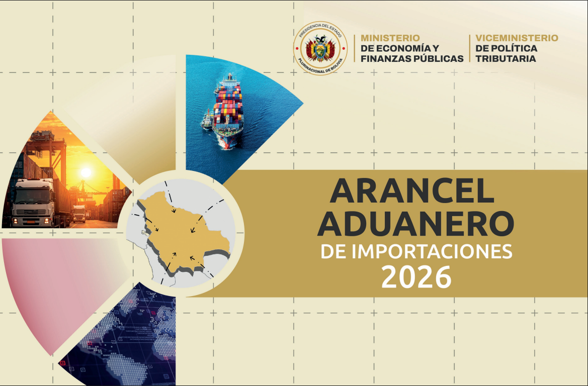

de la Nación “Tte. Armando De Palacios”
y Cálculo de Tributos Aduaneros en Bolivia”
Introducción

App · Arancel & TributosAplicación móvil para la consulta del arancel aduanero de Bolivia y el cálculo de tributos.
De acceso gratuito, dirigida a estudiantes y profesionales del comercio exterior y aduanas.
Búsqueda rápida y organizada de partidas arancelarias con cálculo automatizado de tributos.
Sustituye la consulta en libros físicos por una herramienta digital accesible y eficiente.
Análisis FODA
Fortalezas
- Sólida base técnica del emprendedor en apps móviles.
- Interfaz simple y amigable para consulta rápida.
- Consulta y cálculo de tributos integrados en una sola app.
- Acceso gratuito con monetización por publicidad.
Oportunidades
- Tendencia creciente de apps profesionales en comercio exterior.
- Vínculos posibles con instituciones educativas del área aduanera.
- Mayor demanda de herramientas digitales especializadas.
- Información arancelaria oficial gratuita desde la gestión 2026.
Debilidades
- Recursos limitados para inversión inicial.
- Ausencia de un equipo multidisciplinario.
- Dependencia del esfuerzo individual del emprendedor.
Amenazas
- Competencia con otras apps de consulta arancelaria.
- Herramientas digitales genéricas de consulta comercial.
- Barreras de adopción por usuarios de métodos tradicionales.
- Riesgo de estancamiento sin posicionamiento o alianzas.
Objetivos
Desarrollar una aplicación móvil para la consulta de partidas del arancel aduanero de Bolivia y el cálculo de tributos correspondientes, con el propósito de optimizar el acceso a información arancelaria para estudiantes, profesionales del área de comercio exterior y demás usuarios interesados, mediante una herramienta digital accesible y de uso eficiente.
Objetivos Específicos
Justificación
Desarrollo multiplataforma con Flutter y base de datos local SQLite, con consultas optimizadas e indexadas que permiten funcionamiento offline y cálculo inmediato de tributos.
Facilita el acceso gratuito a información arancelaria para estudiantes y profesionales de aduanas, reduciendo las limitaciones económicas para obtenerla.
Solución de acceso gratuito sostenida por publicidad, introduciendo una alternativa tecnológica nacional con posibilidad de ampliarse a otros desarrollos.
Metodología de Desarrollo
Sprints o ciclos cortos con objetivos claros y entregables verificables en cada iteración del proyecto.
Tablero visual de tareas (por hacer, en curso, revisión, terminado) que muestra el avance del trabajo.
Flujo continuo con priorización del alcance y control visual del progreso en cada etapa.